Pulsar 介绍
设计目的
多租户，地理复制，强大的持久化保证
关键特性
实时消息传递 – 使地理上分布的应用程序和系统能够通过交换消息以异步的方式相互通信。Pulsar 的目标是通过支持多种编程语言和二进制消息传输协议，为最广泛的客户提供这种能力。
实时计算 – 提供在 Pulsar 内部对这些消息进行用户定义的计算的能力，不需要外部计算系统来执行基本的转换操作，如数据压缩、过滤和聚合
可扩展的存储 – Pulsar 的独立存储层和对分层存储的支持使你的消息数据可以保留到你需要的任何时间。对于 Pulsar 所能保留和访问的数据量，没有任何物理限制
企业消息传递系统
消息传递
用来描述生产者和消费者之间的数据路由，例如电子邮件、文本信息、即时消息、VoIP、视频聊天，用来支持人与人之间通过临时渠道的沟通
单向消息
视频流媒体
企业消息传递系统（EMS）
提供各种消息传递协议实现的软件
- data distribution service (DDS)
- advanced message queuing protocol (AMQP)
- Microsoft message queuing (MSMQ)
调用/接收应用程序之间建立一个直接的网络通信通道，通过该通道交换参数，EMS 可以用来以消息的形式保留这些参数，并且保证它们被传递到预定的接收者那里进行处理。这允许调用者异步地发送其请求，并等待他们试图调用的服务的响应。它还允许服务以异步的方式传达其响应，并将其结果发布到 EMS，以便最终交付给原始调用者。
这种解耦通过提供一个标准化的、可靠的组件内通信通道来促进异步应用开发，该通道作为处理数据的持久性缓冲区，即使一些组件处于离线状态。
这些消息模式通常以语言中立的格式定义，如 XML、JSON 或 Avro IDL，这使得组件可以用任何支持这些格式的编程语言来开发。
RPC
RPC 的主要例子是基于简单对象访问协议（SOAP）和表示状态传输（REST）的网络服务，它们通过固定的端点相互作用
在这两种方式中，当一个进程想与一个远程服务进行交互时，它需要首先通过一个发现服务来确定服务的远程位置，然后使用适当的参数和类型来远程调用所需的方法
同步调用很慢、远程服务不可用
关键能力
异步通信：消息传递系统允许服务和应用程序以非阻塞的方式相互通信，这意味着消息发送者和接收者不需要在同一时间与消息传递系统（或彼此）互动。消息传递系统将保留消息，直到所有预定的接收者消费它。
消息保留：与基于网络的消息传递不同，消息只存在于网络上，如 RPC，发布到消息系统的消息会保留在磁盘上，直到它们被交付。未交付的消息可以被保留数小时、数天甚至数周，大多数消息系统允许你指定保留策略。
消息确认：消息系统被要求保留消息，直到所有预定的收件人收到它；因此，需要一种机制，使消息消费者能够确认消息的成功交付和处理。这允许消息传递系统清除所有成功传递的消息，并重试将消息传递给那些还没有收到的消费者。
消息消费：很明显，如果一个消息系统不提供一种机制，让目标接收者能够消费消息，那么它就不是特别有用。首先，一个 EMS 必须保证它收到的所有消息都能被传递。很多时候，一条消息可能是为多个消费者准备的，EMS 必须维护这些信息，以及哪些消息已经被交付给谁。
消息消费模式
发布订阅消息
生产者将消息发布到指定的主题（topic），有序存储，支持多个消费者通过订阅机制接收主题中的每条消息。
适用于需要多个消费者接收每条消息的用例，或者那些接收和处理消息的顺序对于维持正确的系统状态至关重要的用例
消息队列
队列为一个或多个相互竞争的消费者提供先入先出（FIFO）的消息传递语义，消息是按照收到的顺序交付的，只有一个消息消费者收到并处理单个消息
消息队列可以很容易地支持更高的消费率，在出现大量积压消息的情况下，扩大消费者的数量。为了确保消息被精确处理一次，每条消息在被成功处理并被消费者确认后，必须从队列中移除。由于其精确的一次处理保证，消息队列是工作队列用例的理想选择。
在消费者失败的情况下（指在指定的时间范围内没有收到确认），消息将被重新发送给另一个消费者。在这种情况下，消息很可能会被不按顺序处理。因此，消息队列非常适用于这样的用例，即每个消息被精确处理一次，但消息的处理顺序并不重要。
信息传递系统的演变
通用消息传递系统
服务层：服务层是 EMS 中的一个概念层，直接与消息生产者和消费者互动。它的主要目的是接受传入的消息，并将其发送到一个或多个目的地。因此，它通过一个或多个支持的消息传递协议进行通信，如 DDS、AMQP 或 MSMQ。因此，该层在很大程度上依赖于用于通信的网络带宽和用于消息协议转换的 CPU。
存储层：存储层是 EMS 中的概念层，负责消息的持久化和检索。它直接与服务层互动，以提供所请求的消息，并负责保留消息的正确顺序。因此，这一层在很大程度上依赖于磁盘的消息存储。
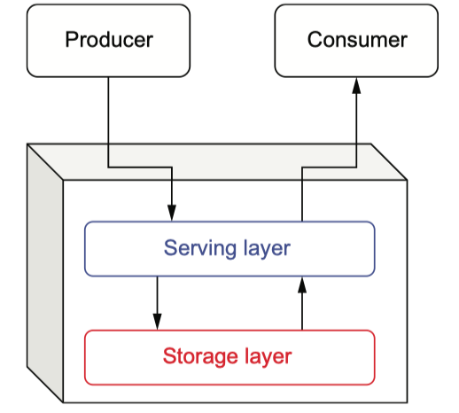面向消息的中间件
最早的实现被设计成部署在一台机器上，这台机器通常位于公司数据中心的深处。这不仅是一个单点故障，也意味着系统的可扩展性受限于主机的物理硬件容量，因为这个单一的服务器负责处理所有的客户请求并存储所有的消息。些单服务器 MOM 系统所能服务的并发生产者和消费者的数量受限于网卡的带宽，而存储容量则受限于机器上的物理磁盘。
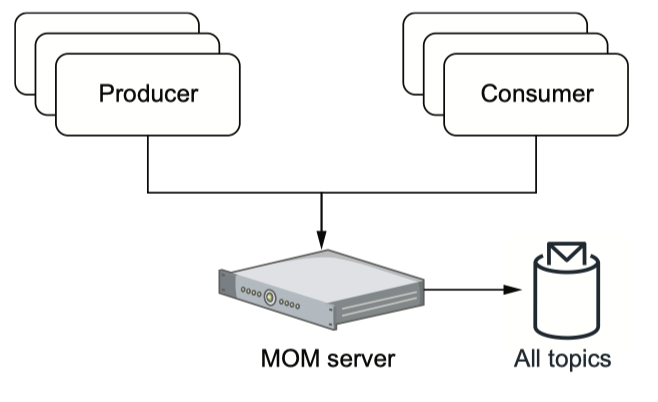这些可扩展性问题通过为这些单服务器 MOM 系统增加集群功能而得到解决。这允许多个单一服务实例共享消息的处理，并提供一些负载平衡。尽管 MOM 是集群的，但实际上它只是意味着每个单服务实例负责为所有主题的一个子集提供和存储消息。在此期间，关系型数据库也采取了类似的方法，称为分片，以解决这种可扩展性问题。
在出现主题"热点"的情况下，分配给该特定主题的不幸的服务器仍可能成为瓶颈，或可能耗尽存储容量。如果集群中的任何一台服务器发生故障，它将会把它所服务的所有主题都拖垮。虽然这确实将故障对整个集群的影响降到最低（即继续运行），但对于它所服务的特定主题/队列来说，这是一个单点故障。
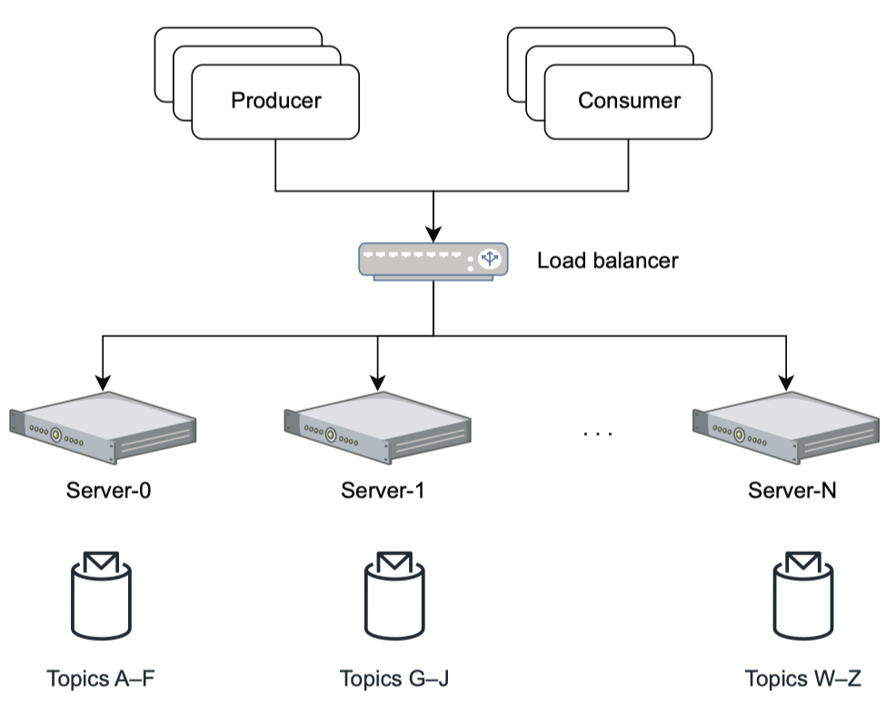企业消息总线（ESB）
ESB 的核心概念是消息总线，它作为所有应用程序和服务之间的通信渠道。这种集中式的架构与之前其他面向消息的中间件所使用的点对点集成形成了直接对比。
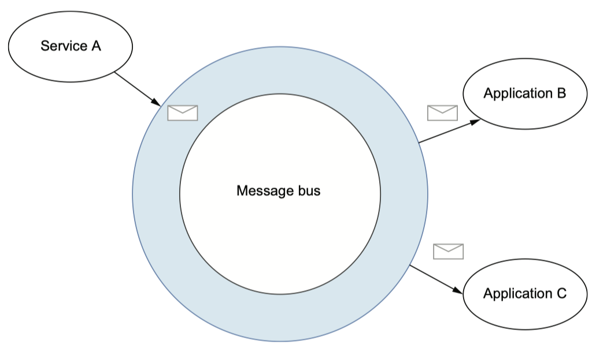有了 ESB，每个应用或服务将通过一个单一的通信通道发送和接收所有的消息，而不必指定他们想要发布和消费的具体主题名称。每个应用程序将在 ESB 上注册，并指定一套用于识别它感兴趣的消息的规则，而 ESB 将处理所有必要的逻辑，从总线上动态地路由符合这些规则的消息。同样地，每个服务不再需要事先知道其消息的目标，只需将其消息发布到总线上，并允许它路由消息。
ESB 还通过强调在消息系统内部处理消息的能力，而不是让消费应用程序执行这一任务，在流处理的道路上迈出了第一步。大多数 ESB 提供消息转换服务，通常通过 XSLT 或 XQuery，处理发送和接收服务之间的消息格式转换。它们还在消息系统本身中提供了消息的丰富和处理能力，在那之前，这些都是由接收消息的应用程序执行的。这是对消息系统的一种根本性的新思考方式，以前几乎只被用作一种运输机制。
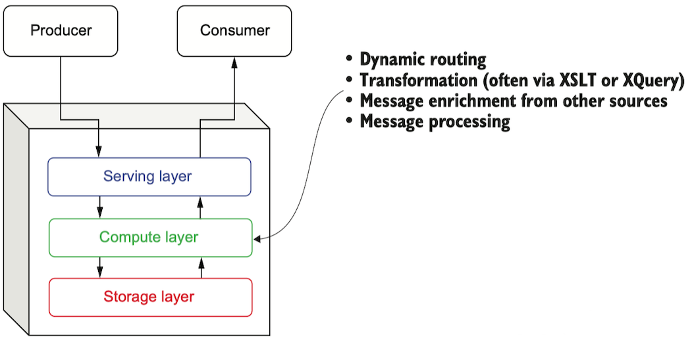ESB 对消息系统发展的另一个重大贡献是它对与外部系统集成的关注，这迫使消息系统首次支持各种非消息协议。虽然 ESB 仍然完全支持 AMQP 和其他 pub-sub 消息协议，但 ESB 的一个关键区别在于它能够将数据从非消息导向的系统（如电子邮件、数据库和其他第三方系统）移入和移出总线。为了做到这一点，ESB 提供了软件开发工具包（SDK），允许开发人员实现他们自己的适配器，与他们选择的系统集成。
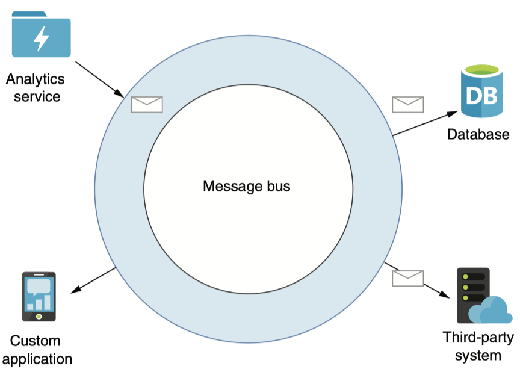分布式消息传递系统
该系统将处理和存储分布在多台机器上。分布式计算的最大好处之一是能够横向扩展系统，只需在系统中增加新的机器。与非分布式系统的前身不同，这些新开发的系统受制于单台机器的物理硬件容量，现在可以轻松地利用数百台机器的资源，而且成本低廉。
在分布式消息系统中，单个主题的内容分布在多台机器上，以便在消息层提供横向可扩展的存储，这是以前的消息系统所不能做到的。将数据分布在集群中的几个节点上也提供了一些优势，包括数据的冗余和高可用性，增加消息的存储容量，随着消息 broker 数量的增加而增加消息吞吐量，以及消除系统中的单点故障。
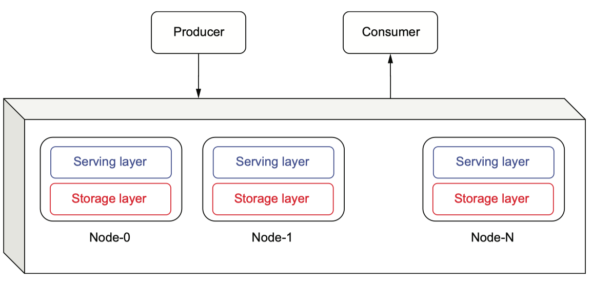分布式消息系统和集群式单节点系统之间的关键架构区别在于存储层的设计方式。在以前的单节点系统中，任何给定主题的消息数据都一起存储在同一台机器上，这使得数据可以从本地磁盘快速提供。然而，正如我们前面提到的，这将 topic 的大小限制在该机器的本地磁盘的容量上。在分布式消息系统内，数据被分布在集群内的几台机器上。这种在多台机器上的数据分布允许我们在单个主题中保留超过单个机器存储容量的消息。使得这种数据分布成为可能的关键架构抽象是 write-ahead log，它将消息队列的内容作为一个可以存储消息的单一附加数据结构来处理。
这为分布式消息系统提供了远比前几代消息系统更可扩展的存储容量层。分布式消息传递结构的另一个好处是，有一个以上的 broker 能够为任何给定的主题提供消息，这通过将负载分散到多台机器上而增加了消息的生产和消费吞吐量。例如，发布到下图所示主题的消息将由三个独立的服务器处理，每个服务器都有自己的磁盘写入路径。这将导致更高的写入率，因为负载被分散在多个磁盘上，而不是像上一代消息系统那样只有一个磁盘。当涉及到数据如何在集群中的节点上分布时，有两种不同的方法：基于分区和基于分段。
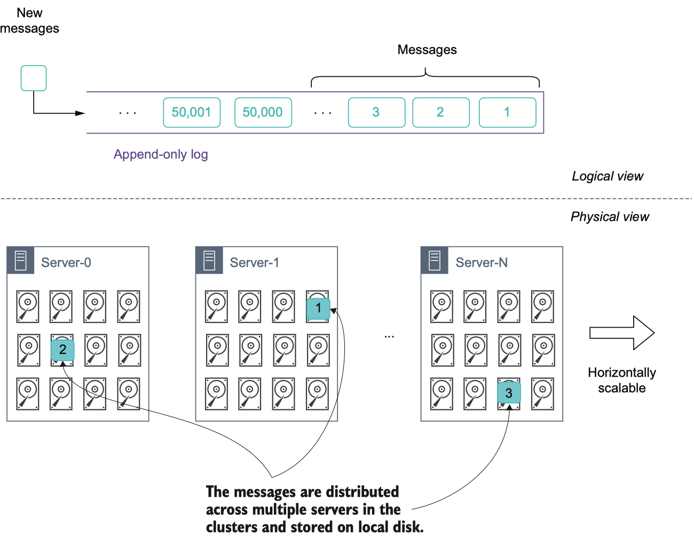在 Kafka 中以分区为中心的存储
当在消息系统中使用基于分区的策略时，主题被划分为固定数量的分组，称为分区。如下图所示，发布到主题的数据被分配到各个分区，每个分区都会收到发布到主题的一部分消息。现在，主题的总存储容量等于主题中的分区数量乘以每个分区的大小。一旦达到这个极限，就不能再向该主题添加数据。简单地在集群中添加更多的 broker 不能缓解这个问题，因为你还需要增加主题中的分区数量，这必须手动执行。此外，增加分区的数量也需要进行重新平衡，正如我将讨论的那样，这是一个昂贵和耗时的过程。
在以分区为中心的存储系统中，分区的数量是在创建主题时指定的，因为这允许系统确定哪些节点将负责存储哪个分区，等等。然而，预先确定分区的数量有一些意想不到的副作用，包括以下几点。
- 一个分区只能存储在集群内的一个节点上，所以分区的大小被限制在该节点上的可用磁盘空间的数量。
- 由于数据被均匀地分布在所有分区上，每个分区的大小被限制在主题中最小的分区的大小。例如，如果一个主题分布在三个节点上，分别有 4TB、2TB 和 1TB 的可用磁盘，那么第三个节点上的分区只能增长到 1TB 大小，这反过来意味着主题中的所有分区也只能增长到 1TB。
- 虽然没有严格要求，但每个分区通常会被多次复制到不同的节点上，以确保数据冗余。因此，最大的分区大小被进一步限制为最小的复制的大小。
如果你遇到了这些容量限制，你唯一的补救措施就是增加主题中的分区数量。然而，这种容量扩展过程需要重新平衡整个主题，如图所示。在这个重新平衡的过程中，现有的主题数据被重新分配到所有的主题分区，以释放现有节点上的磁盘空间。因此，当你向现有的主题添加第四个分区时，一旦重新平衡过程完成，每个分区应该有大约 25% 的信息总量。
这种重新复制数据的做法很昂贵，而且容易出错，因为它消耗的网络带宽和磁盘 I/O 与主题的大小成正比（例如，重新平衡一个 10TB 的主题将导致 10TB 的数据从磁盘读取，通过网络传输，并写入目标 broker 的磁盘）。只有在重新平衡过程完成后，才能删除以前存在的数据，并恢复对客户的服务。因此，建议你明智地选择分区的大小，因为重新平衡的成本是不能轻易排除的。
为了给数据提供冗余和故障转移，你可以配置分区在多个节点上进行复制。这可以确保即使在一个节点发生故障的情况下，磁盘上也有一个以上的数据副本可用。默认的复制设置是三个，这意味着系统将保留每个信息的三个副本。虽然这是一个很好的权衡冗余空间的方法，但是当你确定 Kafka 集群的规模时，你需要考虑到这个额外的存储需求。
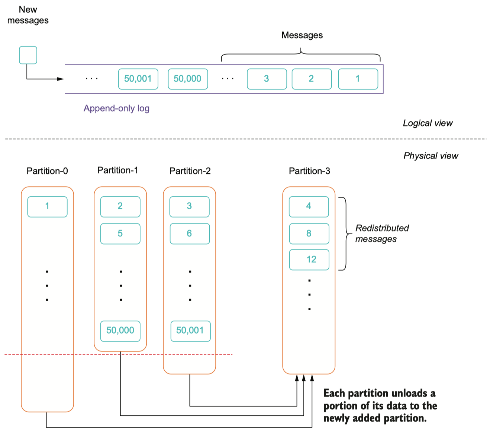在 pulsar 以段为中心的存储
Pulsar 依靠 Apache BookKeeper 项目来提供其消息的持久性存储。BookKeeper 的逻辑存储模型是基于以顺序日志的形式存储的无边界流条目的概念。正如你在图中看到的，在 BookKeeper 中，每条日志都被分解成较小的数据块，被称为段，而这些段又由多个日志条目组成。然后，这些段被写入存储层中的一些节点，即所谓的 bookies，以获得冗余和规模。
从图中可以看出，这些段可以放在存储层中具有足够磁盘容量的任何地方。当存储层中没有足够的存储容量用于新的分段时，可以很容易地增加新的节点并立即用于存储数据。以段为中心的存储架构的主要好处之一是真正的水平可扩展性，因为段可以无限地创建并存储在任何地方，而不像以分区为中心的存储那样，根据分区的数量对垂直和水平扩展施加人为限制。
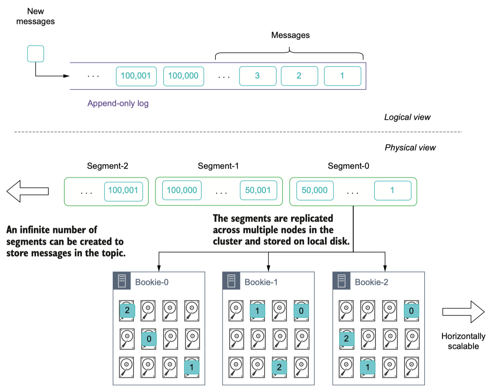与 Apache Kafka 的比较
多层架构
Apache Pulsar 的多层架构将消息服务层与消息存储层完全分离，允许每层独立扩展。传统的分布式消息传递技术，如 Kafka，采取了将数据处理和数据存储放在同一集群节点或实例上的做法。这种设计选择提供了一个更简单的基础设施，并且由于减少了网络上的数据传输而带来了一些性能上的好处，但代价是有很多影响可扩展性、弹性和操作的折衷。
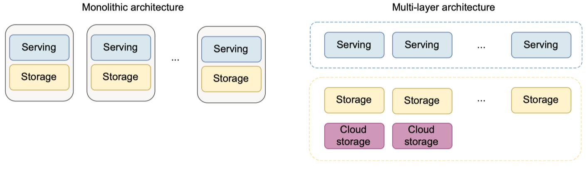Pulsar 的架构采取了一种非常不同的方法–这种方法开始在一些云原生解决方案中得到应用，而且部分是由于当今普遍存在的网络带宽的显著改善而实现的：即计算和存储的分离。Pulsar 的架构将数据服务和数据存储解耦为不同的层：数据服务由无状态的 broker 节点处理，而数据存储则由 bookie 点处理，如图 1.16 所示。这种解耦有几个好处，包括动态可扩展性、零停机升级和无限的存储容量升级，这只是其中的几个例子。此外，这种设计对容器友好，使 Pulsar 成为托管云原生流式系统的理想技术。
动态扩展
考虑这样的情况：我们有一个 CPU 密集型的服务，当请求超过某个阈值时，其性能开始下降。在这种情况下，我们需要横向扩展基础设施，以提供新的机器和应用程序的实例，以便在当前机器上的 CPU 使用率超过 90%时分配负载。与其依靠监控工具来提醒你的 DevOps 团队注意这种情况，并让他们手动执行这一过程，不如让整个过程自动化。
自动缩放是所有公有云供应商的一个共同特征，如 AWS、微软 Azure、谷歌云和 Kubernetes。它允许根据资源利用率指标（如 CPU/内存）对基础设施进行横向自动缩放，而不需要任何人工干预。虽然这种能力确实不是 Pulsar 独有的，任何其他信息传递平台都可以利用这种能力在高流量条件下进行扩展，但在 Pulsar 这样的多层架构中，这种能力更加有用，我们将讨论两个原因。
Pulsar 在服务层的无状态 broker 能够在高峰期过后缩小基础设施的规模，这在公共云环境中直接转化为成本节约。其他使用单体架构的信息传递系统无法缩减节点，因为这些节点在其连接的硬盘上包含数据。只有在数据被完全处理或被转移到另一个将保留在集群中的节点上时，才能删除多余的节点。这两件事都不能轻易地以自动化的方式进行。
其次，在一个单一的架构中，比如 Apache Kafka，broker 能为存储在附加磁盘上的数据提供请求。这限制了自动扩展集群以应对流量高峰的作用，因为新加入 Kafka 集群的节点将没有任何数据需要服务，因此，将无法处理任何传入的请求，从主题读取现有数据。新加入的节点将只能处理写请求。
最后，在 Apache Kafka 这样的单体架构中，水平扩展是通过添加新的节点来实现的，这些节点同时具有存储和服务能力，而不管你是在跟踪和响应哪个指标。因此，当你扩大服务容量以应对高 CPU 使用率时，你也在扩大你的存储容量，无论你是否真的需要额外的存储，反之亦然。
自动恢复
在将信息传递平台投入生产之前，您需要了解如何从各种故障情况下恢复，首先是单节点故障。在像 Pulsar 这样的多层架构中，这个过程是非常直接的。由于 broker 点是无状态的，它们可以通过启动一个新的服务实例来取代发生故障的节点，而不会造成服务中断或任何其他数据替换的考虑。在存储层，数据的多个副本分布在多个节点上，在发生故障时可以很容易地用新的节点替换。在这两种情况下，Pulsar 都可以依靠云提供商的机制，如自动缩放组，以确保始终有最低数量的节点在运行。单一架构，如 Kafka，将再次受到影响，因为新加入 Kafka 集群的节点将没有任何数据需要服务，因此，只能处理传入的写请求。